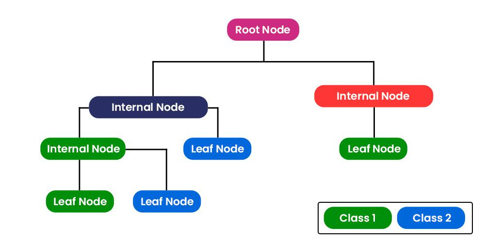

OVERVIEW
- Atmospheric correction in Wollongong using GEE
- cloud masking in a very cloud urban area Wollongong
- Introduction to classification Methods at polygon and pixel level
- polygons locally defined to areas with specific characteristics to teach the algorithm how to recognise categorised surface types
- Use of machine learning methods for surface classification, Random Forest (RF) and CART
best results at pixel level for the RF (over 80% Validation accuracy) although over-fitting witnessed (99% training accuracy)
-
running CART method with for 10 and 100 nodes to understand difference in parameter tuning
- better results at CART 10 nodes (79% training and validation accuracy), proving model does not over-fit and provides reliable output
- Understanding function elements work in GEE, and how to output requested functionalities
Study area selection
For this entry, we focus on atmospheric correction in GEE, with specific on the Wollongong area, in New South Wales, Australia. We initially chose this region because the name is particularly interesting but also has the advantage of having interesting characteristics:
is surrounded by the ocean on the east
wilderness on the western side
urban areas in Wollongong itself, providing ground contrast interesting to analyse.
Setting the area in GEE
We start of our analysis by getting a simple view of the studied area. Here, we have Wollongong illustrated through S-2 with images collected between January and October 2022. In this case, we selected images with less than 1% cloud cover, which allows up to not need to implement a cloud mask but provide a clear image of the area:

Whilst this method allows for clear images, when studying an area these might not always be available. For example, the study area might not have sufficient low cloud-cover images as the research is time specific (i.e. focused on a specific time period). For this reason, the below image is the result we have when include images with up to 20% cloud cover:

Understanding how cloud mask works
The urban area of Wollongong is particularly covered in clouds, so-much so that none of the urban area is visible. To counter this, we use a cloud mask which uses the QA60 band, where the QA stands for ‘Quality Assurance’ and 60 refers to the granularity of the image, with 60m spatial resolution source. It has two possible values, bit 10 and bit 11 which respectively to opaque and cirrus clouds. Using this band has been particularly successful in developing automatic cloud models for S-2 in GEE ( Li et al. (2022) ).
In addition to the mask, we take the median value of the pixel and apply it as a value. This allows the removal of the clouds whilst also keeping the image information.
NOTE: we acknowledge that other methods which are more efficient exist, as some information is lost with the ‘median’ method. We attempted to use a GEE community provided example of s2cloudless but was unsuccessful as we recurring memory limit issues.
When applying the respective cloud masking function, we get the following result:
We see a significant improvement in the results, with no more clouds appearing in the image. The polygons included above serve as reference areas for the classifications we with to use.
The colours refer to:

Classification
Random Forest (RF)
At polygon level
By selecting the reference area polygons, we use this as ground truths in classifier models. These serve as reference areas by which our Random-forest will predict in which category areas outside our reference polygons belong:
Here, 70% of the data is in the training set, and 30% in the test. This means that 70% of the data is seen by the model, and then once the parameters are created, it tests it’s efficiency on the remaining 30%, which remain unseen at that point.
In this case and all following classification analysis, ‘grey’, ‘blue’, ‘white’, ‘black’, ‘green’ are respectively urban low, water, high urban, farmland and forest areas!
At pixel level
As the previous analysis was conducted at polygon, some accuracy is lost as it is not as representative as taking it at pixel level. We decide to follow with this as it has the advantage of generally being more precise in most cases, especially urban areas. Although, this is not always the case, as heterogeneous or mountain tropical environments have had evidence where they perform better with object based modelling ( Silveira et al. (2019) ). We will compared the visual and numeric results from both classification approach methods:
We see that the Pixel Classification approach is more precise that the Object based approach. Notable as the pixel based approach is more successful in categorising Farm Land areas (the black dots) which were in-existent in the object based approach.
CART (Classification and Regression Tree)
We then proceed to run the same analysis for CART. We use the same methods as above for polygon and pixel level, putting 70% of the data in training and 30% in test. It has the advantage of automatically selecting the useful spectral data ( Lawrence and Wright (n.d.) ), making it easy to work with even for non-ML experts.
Like for the RF, we initially use 10 nodes, meaning using trees with a maximum of 10 leaf nodes. These trees look something a little like this:

These create a decision tree, which typically start with a single node, and branches out into the different possible outcomes. By selecting 10 or 100 nodes, the algorithm creates these branches according to different arguments, thus influencing and changing the results.
At polygon level
Our initial Cart output illustrates the model with object based references with 10 nodes.
We proceed to see how the results change when we add more granularity in the number of possible nodes, increasing this to 100.
Differences are visible between the different nodes in the object based analysis. Similar to the RF, there seems to be no black classification (farm land). This is likely due to the non-optimal reference area selecting by us, the user. Our farm-land area most likely encompasses too many topographical differences within the polygon, which does not allow for precise identification of farm-land through object based classification.
Nonetheless, pixel level analysis allows us to make different insights
At pixel level
With 10 nodes at pixel level, we already see the appearance of the black dots, or representations of the farm-land categories. We increase the number of nodes to 100 to see if this betters the results.
The classifications change depending on the number of nodes but we can not visually determine which method is best.
We can do this numerically by comparing the training and validation accuracy between RF and CART for our study area Wollongong:
| Training Accuracy | Validation Accuracy | |
|---|---|---|
| Random Forest | 0.9951065 | 0.8132372 |
| CART (10 nodes) | 0.7927461 | 0.7916121 |
| CART (100 nodes) | 0.8428325 | 0.7876802 |
We see that RF has the highest validation accuracy although it seems to have considerable over-fitting, with the accuracy decreasing by nearly 20% between training and validations sets. This is not surprising as RF’s tend to over-fit, and this is further accentuated by our non-optimal reference object choices ( Tang, Garreau, and Luxburg (2018) ).
Personal Reflection
Correction Analysis methods
This entry was quite insightful in terms of technical understanding in remote sensing image processing and correction. Notably introducing ML techniques that are CART and RF’s. The insights found were interesting, especially with the models correctly identifying various ground characteristics, such as the rivers which coincide with the existing topography.
It was interesting to compare these different techniques, playing around with the different techniques (RF vs CART) but also looking at various parameters such as the number of nodes and reference methods (object based vs pixel).
In future, now that we are more familiar with the methods, we look into getting more precise models. We would do so by paying attention to the hyper-parameters tuning strategies in order to optimise the outcomes ( Probst, Wright, and Boulesteix (2019) ) whilst still keeping it computationally efficient. This includes, but not limited to:
minimum number of samples a node must contain
maximum number of nodes per branch
defining a splitting rule (which optimises Gini Impurity in classification, determining how a feature should split the data when forming the tree)
Finally, we also acknowledge the black box elements to these statistical methods used for analysis. Black boxes are systems that their internal logic to the user ( Guidotti et al. (2019) ) which make certain results, although correct, difficult to precisely explain.
GEE Technicalities
This entry allowed to further delve into the technical side of GEE.
Initially, we managed to clip the relevant area from the GAUL data set and user forums. This is interesting as we used the clip directly when defining the mask instead of clipping the image separately. The JS code format is as follows:
var waytwo = ee.ImageCollection('COPERNICUS/S2_SR_HARMONIZED')
.filterDate('2022-01-01', '2022-10-31')
.filter(ee.Filter.lt('CLOUDY_PIXEL_PERCENTAGE',20))
.map(maskS2clouds)
// clips the images and applies it over the image collection
.map(function(image){return image.clip(wollo)});Issues were encountered when trying to understand how to make the CART model for classification work. When running the above code, although we managed to clip the image an create the wished layer, we could not get the input to work when getting the cart model. We got the below error:

To counter this, in the JS code, it is important to make the relevant variables as functions in order to apply certain characteristics, such as clipping which works using base commands such as .median():
// in this example, 'wollo' is the shapefile for the project, wollongong
// data here collected from Sentinel-2
var waytwo = ee.ImageCollection('COPERNICUS/S2_SR_HARMONIZED')
.filterDate('2022-01-01', '2022-10-31')
.filterBounds(wollo)
.filter(ee.Filter.lt('CLOUDY_PIXEL_PERCENTAGE',20));
// initially we tried making the object work using
// where maskS2clouds is a cloud cover function
var waytwo_masked = waytwo.map(maskS2clouds)
// this does not work as the variable is not a function, but when adding the median() argument, this is no longer an issue
// also allows for the removal of clouds as it takes the middle value of each pixel
var waytwo_masked = waytwo.map(maskS2clouds).median();
var waytwo_clip = waytwo_masked.clip(wollo)Although this took a while to figure out, trial and error has allowed to better understand how the different functions and notations work in Javascript which will be useful for following analysis.